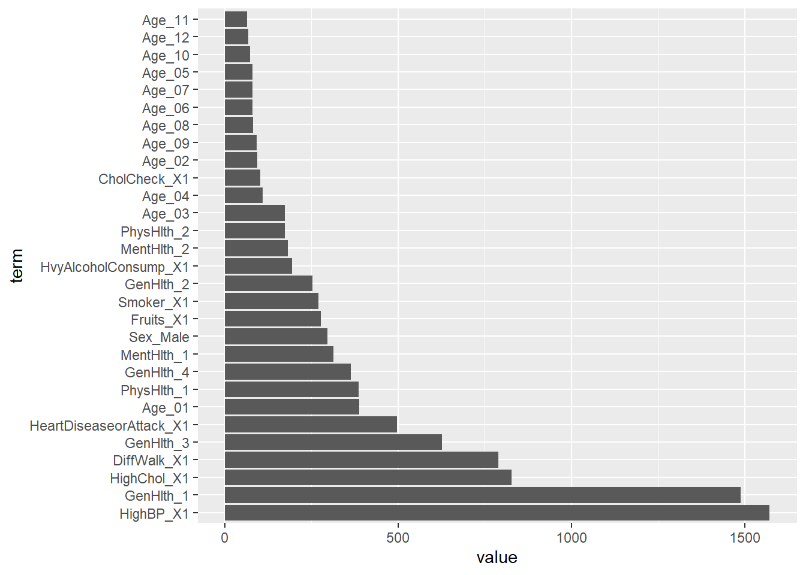

library(tidyverse)
library(tidymodels)
library(ranger)
set.seed(558)
diabetes_final <- readRDS(file = "diabetes_final.rds")
diabetes_final <- diabetes_final |> slice_sample(n = 5000)
data_split <- initial_split(diabetes_final, prop = 0.70)
train_diabetes<- training(data_split)
test_diabetes <- testing(data_split)
cv_folds <- vfold_cv(train_diabetes, v = 5)Modeling
Welcome to the modeling section! This is a direct continuation from the Exploratory Data Analysis, or (EDA) section found here.
The purpose of this section is to take the newly subsetted Diabetes dataset and compare it to two different models: the classification tree and the random forest. Based on the mean log loss (lower is better), we will determine which model is the best and use it for the API, which can be accessed upon request. All modeling steps and relevant intermediary notes will be annotated and explained.
Train and Test Split
The first step of any modeling journey is to create a test/train split. This is so that we can reduce overfitting - or essentially “hide” parts of the data to make sure we perform as well on the train set as we do on the test set. Let’s load in our necessary libraries and set our seed. Using the readRDS, we can access the previously created file from the EDA section.
We will be using 5-fold cross validation, which will test and train the model on different iterations of the data.
Classification Tree
The classification tree splits up predictor spaces into different regions, such that we can make different predictions based on the particular “region” of the data we are exploring. The region of prediction is made by the most common class in that specific region, and we are using it in this case to predict the binary (0,1) response variable of diabetes incidence. Important to note that this is one of the methods of supervised learning. More about the process and parameters below.
Recipe
We first set up the recipe that we will be using for both the classification tree and the random forest. We have no numerical variables, so we are just concerned with making sure all of the categorical variables are “dummied”, or normalized such that we can correctly standardize them and their importance in the model.
tree_rec <- recipe(Diabetes_binary ~ ., data = train_diabetes) |>
step_dummy(HighBP, HighChol, Fruits, DiffWalk, Smoker,CholCheck,HeartDiseaseorAttack, HvyAlcoholConsump, GenHlth, MentHlth, PhysHlth, Sex, Age)Paramaterization of the Tree
Using the decision_tree() function, we can set the minimum number of data that are required for the node to be split, or for the tree to create a branch. We have set it low here, such that we can capture important trends within the data. When I was troubleshooting this step, I originally had it set to 500, but realized it was missing some trends in the data that improved prediction a lot.
While setting up the grid using grid_regular() , I allowed for 10 levels which is generally considered a lot, but I figured it was important to create a large set of possible trees for the model to split on.
tree_mod <- decision_tree(tree_depth = tune(),
min_n = 10,
cost_complexity = tune()) |>
set_engine("rpart") |>
set_mode("classification")
tree_grid <- grid_regular(cost_complexity(), tree_depth(), levels = 10)
tree_grid# A tibble: 100 × 2
cost_complexity tree_depth
<dbl> <int>
1 0.0000000001 1
2 0.000000001 1
3 0.00000001 1
4 0.0000001 1
5 0.000001 1
6 0.00001 1
7 0.0001 1
8 0.001 1
9 0.01 1
10 0.1 1
# ℹ 90 more rowstree_wkf <- workflow() |>
add_recipe(tree_rec) |>
add_model(tree_mod)Fitting the Tree
Now, we can apply the workflow and grid we just created to find the best tree. We are interested in mean log loss, so we use that as the metric when applying fits.
tree_fits <- tree_wkf |>
tune_grid(resamples = cv_folds,
grid = tree_grid,metrics = metric_set(mn_log_loss))
#tree_fits |> collect_metrics()
tree_fits |>
collect_metrics() |>
filter(.metric == "mn_log_loss") |>
arrange(mean)# A tibble: 100 × 8
cost_complexity tree_depth .metric .estimator mean n std_err .config
<dbl> <int> <chr> <chr> <dbl> <int> <dbl> <chr>
1 0.0000000001 5 mn_log_loss binary 0.370 5 0.0152 Prepro…
2 0.000000001 5 mn_log_loss binary 0.370 5 0.0152 Prepro…
3 0.00000001 5 mn_log_loss binary 0.370 5 0.0152 Prepro…
4 0.0000001 5 mn_log_loss binary 0.370 5 0.0152 Prepro…
5 0.000001 5 mn_log_loss binary 0.370 5 0.0152 Prepro…
6 0.00001 5 mn_log_loss binary 0.370 5 0.0152 Prepro…
7 0.0001 5 mn_log_loss binary 0.370 5 0.0152 Prepro…
8 0.001 5 mn_log_loss binary 0.370 5 0.0152 Prepro…
9 0.0000000001 4 mn_log_loss binary 0.380 5 0.0140 Prepro…
10 0.000000001 4 mn_log_loss binary 0.380 5 0.0140 Prepro…
# ℹ 90 more rowsBest Tree Model
Using select_best(), we can find the tree model with the lowest mn log loss. We then take this model and fit it to the entire training set. After fitting it to the entire training dataset, we predict on the test dataset to see what the final mn log loss is for this model.
tree_best_params <- select_best(tree_fits, metric= "mn_log_loss")
tree_best_params# A tibble: 1 × 3
cost_complexity tree_depth .config
<dbl> <int> <chr>
1 0.0000000001 5 Preprocessor1_Model031#finalize model on training set
tree_final_wkf <- tree_wkf |>
finalize_workflow(tree_best_params)
tree_final_fit <- tree_final_wkf |>
last_fit(data_split, metrics = metric_set(mn_log_loss))
tree_final_fit |>
collect_metrics()# A tibble: 1 × 4
.metric .estimator .estimate .config
<chr> <chr> <dbl> <chr>
1 mn_log_loss binary 0.355 Preprocessor1_Model1Results look decent at best based on the mean log loss. Let’s go ahead and look at the picture of this tree:
Final Tree Picture
tree_final_fit |>
extract_workflow() |>
extract_fit_engine() |>
rpart.plot::rpart.plot(roundint = FALSE, type = 2, extra = 104)Looks pretty complex. Some important variables I do see recurring in here are the GenHlth variable, the HighChol and HighBP variables, as well as smoking habits and age. It appears that we see a lot of subsetting around these very extreme categories, which makes sense. Alas, we still have one more model to test.
Random Forests
With random forests, we will be using the same recipe as we did for the trees. This is an ensemble method used that is an extension of bagging (randomly selecting samples of data with replacement). The difference is that random forests do not use all predictors at each step! The random forest is incredibly flexible, and we should note that they are typically used for prediction rather than interpretation. More about the parameterizations below.
Parameterization of the Forest
mtry() is the parameter that we allow tuning for, and it represents the number of variables that are random selected at each individual split. It is important that we allow a range of values here, such that the forest can be more or less complex depending what lowers the mean log loss metric. Note also, for runtime sake and also to keep consistent with the predictability of the classification tree, I have set the number of trees equal to 500 and the minimum n equal to 10. In the grid, I specify values 5 to 13, with 5 levels such that we can obtain 5,7,9,11, or 13 predictors at each split
rf_spec <- rand_forest(
mtry = tune(),
min_n = 10,
trees = 500
) |>
set_engine("ranger", importance = "impurity") |>
set_mode("classification")
rf_wkf <- workflow() |>
add_recipe(tree_rec) |>
add_model(rf_spec)
rf_grid <- grid_regular(
mtry(range = c(5, 13)),
levels = 5
)
rf_grid# A tibble: 5 × 1
mtry
<int>
1 5
2 7
3 9
4 11
5 13Fitting the Forest
Now, we can apply the workflow and grid we just created to find the best tree. We are interested in mean log loss, so we use that as the metric when applying fits. This allows us to then collect metrics and find the best forest model.
rf_fit <- rf_wkf |>
tune_grid(
resamples = cv_folds,
grid = rf_grid,
metrics = metric_set(mn_log_loss)
)
rf_fit |>
collect_metrics() |>
filter(.metric == "mn_log_loss") |>
arrange(mean)# A tibble: 5 × 7
mtry .metric .estimator mean n std_err .config
<int> <chr> <chr> <dbl> <int> <dbl> <chr>
1 5 mn_log_loss binary 0.366 5 0.0132 Preprocessor1_Model1
2 9 mn_log_loss binary 0.378 5 0.0133 Preprocessor1_Model3
3 7 mn_log_loss binary 0.381 5 0.0143 Preprocessor1_Model2
4 11 mn_log_loss binary 0.396 5 0.0209 Preprocessor1_Model4
5 13 mn_log_loss binary 0.396 5 0.0223 Preprocessor1_Model5Finding the Best Forest Model
Using select_best(), we can find the forest model with the lowest mn log loss. We then take this model and fit it to the entire training set. After fitting it to the entire training dataset, we predict on the test to see what the final mn log loss is for this model.
rf_best_params <- select_best(rf_fit, metric = "mn_log_loss")
rf_best_params# A tibble: 1 × 2
mtry .config
<int> <chr>
1 5 Preprocessor1_Model1rf_final_wkf <- rf_wkf |>
finalize_workflow(rf_best_params)
rf_final_fit <- rf_final_wkf |>
last_fit(data_split, metrics = metric_set(mn_log_loss))
rf_final_fit |>
collect_metrics()# A tibble: 1 × 4
.metric .estimator .estimate .config
<chr> <chr> <dbl> <chr>
1 mn_log_loss binary 0.344 Preprocessor1_Model1This is lower than the classification tree!
Final Forest Picture
We can find the variable importances and see if any surprise us or pop out to us:
rf_final_model <- extract_fit_engine(rf_final_fit)
rf_imp <- tibble(term = names(importance(rf_final_model)),value = importance(rf_final_model)) |> arrange(desc(value))
rf_imp# A tibble: 29 × 2
term value
<chr> <dbl>
1 GenHlth_1 42.0
2 HighBP_X1 31.2
3 HighChol_X1 26.0
4 DiffWalk_X1 22.5
5 GenHlth_3 19.4
6 HeartDiseaseorAttack_X1 18.2
7 Smoker_X1 17.9
8 Fruits_X1 17.8
9 PhysHlth_1 17.4
10 MentHlth_1 17.1
# ℹ 19 more rowsrf_imp |>
mutate(term = factor(term, levels = term)) |>
ggplot(aes(x = term, y = value)) +
geom_bar(stat ="identity") +
coord_flip()
Oh wow! The GenHlth variable looks incredibly important. We see some other intuitively natural predictors pop up. The MentHlth and PhysHlth variables also look very important, which makes me feel very happy that I went through the trouble of mutating and playing around with them.
Better Model?
From the lower mean log loss, we see that the random forest is slightly better. Winner winner chicken dinner, we will now fit this to the entire dataset and continue on to the API section of this project.
PS: Although it was particularly close, I did notice in my multiple runnings of multiple models that the forest tended to outperform it with most parameters used. It could just indicate that in this data, it tends to predict the binary response better!
rf_full_fit <- rf_final_wkf |>
fit(diabetes_final)Note that, here we are saving the best workflow and best fit to a .rds. This lets us easily run it in the API or any other program, since we save the runtime from creating and predicting on the very large dataset with our best model. We’ve already gone through the trouble of running it and picking it out, we might as well save it for ease of access!
#saveRDS(rf_final_wkf, file = "rf_final_wkf.rds")
#saveRDS(rf_full_fit, file = "rf_full_fit.rds")